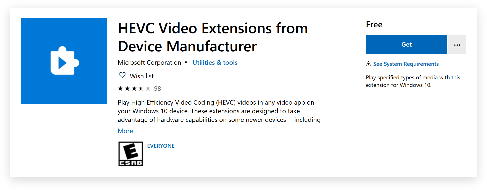

Microsoft used to include support for HEVC (h.265) encoded video with Windows 10 for free. However, they decided to stop providing it and instead require users to pay $1 for the privilege of HEVC video playback.
You can still get HEVC video playback support from Microsoft for free! Microsoft hosts the extension they used to provide built-in on the Microsoft Store as
HEVC Video Extensions from Device Manufacturer but hide it from Microsoft Store search.
You can install the extension by clicking this link: https://www.microsoft.com/en-us/p/hevc-video-extensions...
Press the Get button on the page to open the Microsoft Store.

Once you have installed the extension, you will immediately be able to play HEVC video in Windows 10! No system restart necessary.